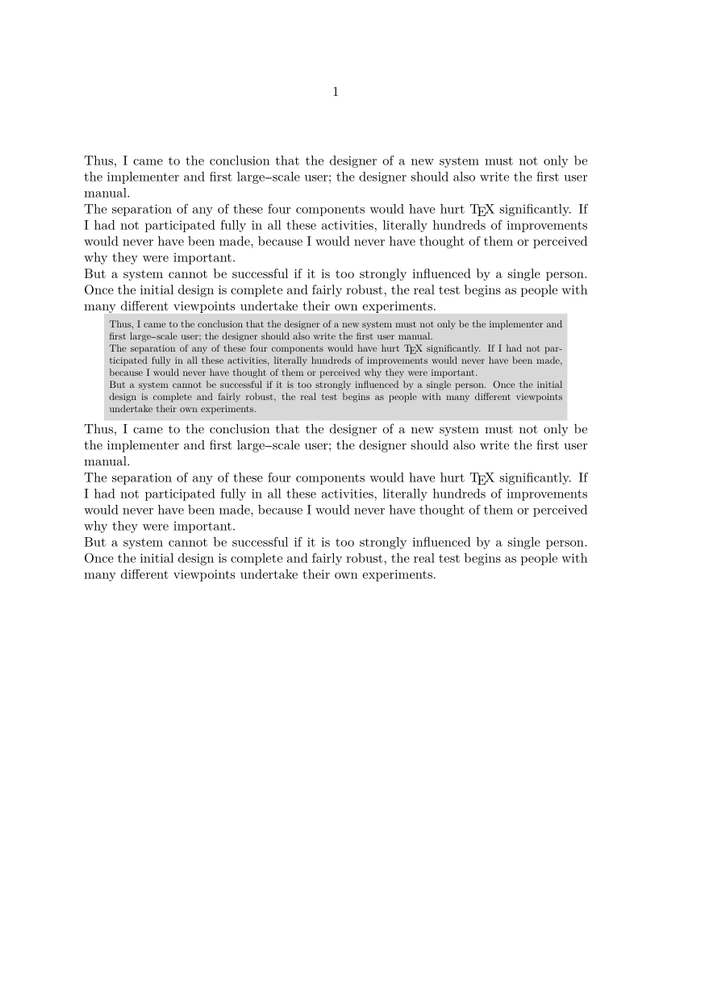
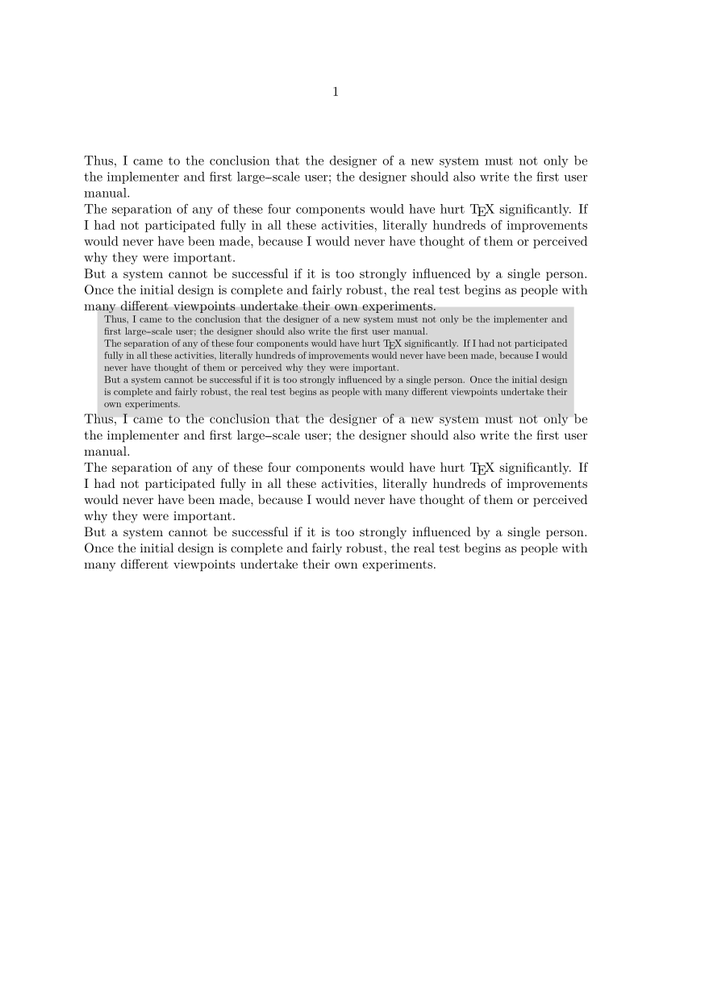
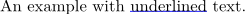
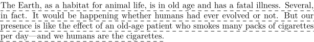

| TODO: Add more examples of usage of textbackgrounds. (See: To-Do List) |
Contents
Basics
Pages, paragraphs, words can have a background color or Overlays. ConTeXt creates these using Graphical programming with MetaPost and MetaFun.
But a usual frame is only one object, its contents can’t flow over to the next page.
You can use \definetextbackground to define a named text background. The environment is based on \framed and understands its parameters, but can contain several paragraphs and page breaks.
After \definetextbackground[Name] you can use \startName ... \stopName (if there’s no name conflict) or \starttextbackground[Name] ... \stoptextbackground. Usually you won’t need \setuptextbackground.
The location parameter changes the behaviour between text (highlighting running text) and paragraph (boxed paragraphs).
(See, eventually, the details manual or the source for further explanations.)
Beware: The examples using \startnarrower may be misleading – of course you can use \startbackground without the narrower environment; it behaves differently without \starttext ... \stoptext.
Example: multi-page backgrounded text
Perhaps one might like to offset examples from the running text, or signal to the reader that the following paragraphs contain secondary, detailed information that is of interest only to the specialists. This can be achieved using textbackground and \definetextbackground.
In contrast, Frames creates text blocks that do not span columns or pages.
In the following example, we also reduce the textwidth and bodyfont size.
-
\definetextbackground[secondary][ location=paragraph, background=color, backgroundcolor=lightgray, leftoffset=.5\bodyfontsize, rightoffset=.5\bodyfontsize, topoffset=.5\bodyfontsize, bottomoffset=.5\bodyfontsize, before={\startnarrower\switchtobodyfont[small]}, after={\stopnarrower}, frame=off,] \starttext \samplefile{knuth} \startsecondary \samplefile{knuth} \stopsecondary \samplefile{knuth} \stoptext
- 
Background Offset
The options left, right, top, bottomoffset can be replaced by backgroundoffset yielding a different result:
-
\definetextbackground[secondary][ location=paragraph, background=color, backgroundcolor=lightgray, backgroundoffset=.5\bodyfontsize, before={\startnarrower\switchtobodyfont[small]}, after={\stopnarrower}, frame=off,] \starttext \samplefile{knuth} \startsecondary \samplefile{knuth} \stopsecondary \samplefile{knuth} \stoptext
- 
Underlining with Text Backgrounds
Underlining is generally frowned upon by experienced TeXnicians. Occasionally, however, it is necessary and \ul or \underbar doesn’t do what you want. In those cases using \definetextbackground for the underlining may also be tried.
-
\definetextbackground[underline] [location=text,alternative=1,background=,frame=off] \definestartstop[underline] [before={\starttextbackground[underline]}, after=\stoptextbackground] \startTEXpage An example with \startunderline underlined\stopunderline\ text. \stopTEXpage
- 
If desired, the location of the line can also be adjusted.
-
\startuseMPgraphic{mpos:par:columnset} % Shift underlining down a touch \iftracepositions show_multi_pars \else draw_multi_pars \fi ; path p ; p := boundingbox currentpicture ; currentpicture := currentpicture shifted (0,-StrutDepth/3) ; setbounds currentpicture to p ; \stopuseMPgraphic \definetextbackground[underline] [location=text,alternative=1,background=,frame=off] \definestartstop[underline] [before={\starttextbackground[underline]}, after=\stoptextbackground] \startTEXpage An example with \startunderline underlined\stopunderline\ text. \stopTEXpage
-

Example: dashed underbar
(by WS, 4/2011)
-
\definetextbackground [dashed] [location=text, framecolor=black, alternative=1, voffset=-\strutdp, background=, frame=off, dash=1] \startdashed \samplefile{ward} \stopdashed
- 
See also
And you can also take benefit of MetaPost and MetaFun features.